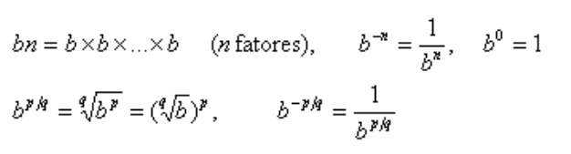
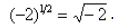
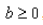
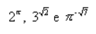
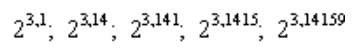
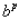
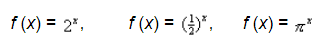
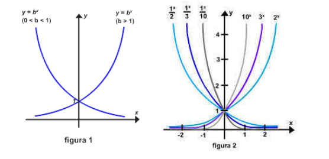

Em álgebra, as potências inteiras e racionais de um número b estão definidas por
Se b for negativo, então algumas das potências fracionárias de b terão valores imaginários; por exemplo, . Para evitar esta complicação, vamos supor que  , mesmo que não seja estabelecido explicitamente.
Observe que as definições precedentes não incluem potências irracionais de b, tais como
Há vários métodos para definir potências irracionais. Uma abordagem é definir potências irracionais de b como limite de potências racionais. Por exemplo, para definir 2^pi devemos começar com a representação decimal de pi, isto é,
Desta decimal, podemos formar uma seqüência de números racionais que ficam cada vez mais próximos de pi isto é,
e a partir destes podemos formar uma seqüência de potências racionais de 2:
Uma vez que os expoentes dos termos desta seqüência tendem a um limite pi, parece plausível que os próprios termos tendam a um limite; sendo assim, é razoável definir 2^pi como sendo este limite. A tabela abaixo fornece evidência numérica de que a seqüência, na realidade, tem um limite e para quatro casas decimais, o valor deste limite é 2^pi +- 8,8250. Em geral, para qualquer expoente irracional p e número positivo b, podemos definir  como o limite de potências racionais de b, criadas pela expansão decimal de p.
| X | 2^X |
| 3 | 8,000000 |
| 3,1 | 8,574188 |
| 3,14 | 8,815241 |
| 3,141 | 8,821353 |
| 3,1415 | 8,824411 |
| 3,14159 | 8,824962 |
| 3,141592 | 8,824974 |
Uma função da forma f (x) = b^x, onde b > 0 e b == 1( diferente ), é chamada de função exponencial de base b, cujos exemplos são
Note que uma função exponencial tem uma base constante e um expoente variável. Assim as funções tais como f (x) = e f (x) = não seriam classificadas como funções exponenciais, uma vez que elas tem uma base variável e um expoente constante.
Pode ser mostrado que as funções exponenciais são contínuas e têm um dos dois aspectos básicos mostrados na figura 1, dependendo de se 1 > b > 0 ou b > 1. A figura 2 mostra os gráficos de algumas funções exponenciais específicas.
 ← Página Anterior Página Seguinte →